|
四千元组装的长途旅行自行车
March 2008
我有计划骑单车去西藏。之所以骑单车主要因为我买不起越野车。大型越野车都是油老虎，而单车绝对环保，不烧汽油只烧板油，有利于减肥。我已经超过标准体重十五公斤，去超市买30斤猪肉你就知道这是件很可怕的事。
我的朋友五毒2006年骑车从成都玩到拉萨后就上了自行车的瘾。现在他在湘江边开了一家自行车店，名叫on the road在路上，专卖Merida和美国Trek品牌车，也卖自行车零件。上周我去他的店子转了一圈，越看越心寒，好车都在一万元以上。最后我决定买零件自己装车，听说自行车老鸟都从不买整车，就像电脑高手都是自己装机一样。
选择长途旅行自行车最要考虑的是两点，一是质量要可靠（经得起长途折腾），二是可维护性好，万一坏了要能就地修理。原则上来说一百元的旧自行车都能长途旅行，维修还很方便，以前骑老式28大杠环游中国的都大有人在。但如果你去的地方比较荒凉（比如一百公里内没有修车的），那还是买个好点的车吧，骑着舒服点。
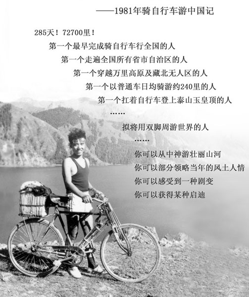
1981年28大杠环游中国的成家麟先生
车重对于竞赛自行车很重要，
但对旅行用自行车就不那么重要。长途旅行不是速度竞赛而是负重行军，车手以及驮包的重量加起来超过车子N倍了。车手要减肥，然后驮包要尽量轻
（精简行李），这个很重要。
如果你去较大的高档自行车店找最贵的零件组装一辆车，所费很容易超过三万，光一个碳素车架就要一万多。但这并不是说最贵的自行车就适合长途旅行，很多竞赛级零件考虑得最多的是重量轻，大量使用铝合金，钛合金和碳纤维，而铝合金的强度是绝对比不过钢材的。碳纤维的东西又轻又结实，
但抗横向拉力很差，而且一旦损坏绝无可能修复，只能报废，钢质车架万一裂开了还有可能焊起来。
闲话少说，先确定车架。欧版旅行车大多采用700C车架配27英寸车圈，比如Merida美丽达野狼和Giant柏帝。这种旅行车短途郊游还是不错的，但700C的27英寸车圈钢丝
和轮胎在中国比较罕见，长途远征还是考虑四处可见的26寸山地车架吧。
车架一定要V刹的，碟刹虽好但可维护性太差，出了省会大城市，县城里不大可能找到自行车碟刹配件，V刹
又轻又便宜，配件也好找。我用的是Avid Single Digit 3的V刹。
本来想要Merida
TFS车架，但16寸的货没有了，而且TFS售价一千多偏贵。最后确定售价600多的MOSSO车架，是个台湾品牌，正好有我喜欢的黑色。这个铝合金架子非常轻只有1550克，据说是国内DIY装车最实惠的选择。敲击下面最长的那根管子中部发出类似敲可乐罐的声音，说明管壁很薄，敲两头结合部回声浑厚，说明这里较厚。正疑惑中，五毒说不存在车架强度的问题，我的MOSSO车架都是正规行货，现在市面上仿冒的假货很多。我晕，中国TMD什么世道，假药假酒还可以理解，居然连单车架子都有人造假。
按道理身高170应该用16寸的架子，但我有点长臂猿，手臂比较长，另外我选的是蝴蝶型车把，弯过来后离车架较近，所以选了17寸的车架。
然后是前叉。前叉非常重要，有人说公路车玩轮子，山地车就是玩叉子。前叉减震有利于下坡但上坡时泄力。如果车子前叉缓冲行程很长，上坡时一脚踩下去感觉像是踩在弹簧上，严重不好发力。最好是有锁死功能的前叉，上坡时锁死弹簧变成硬叉
，下坡打开弹簧同样爽。五毒店里500元以内能锁死的前叉只有RST
Gila，缓冲很涩，但好叉子如R7或者SID Team都超过两千元，我买不起。最后选了个400多的Manitou Six
Comp，这个叉子立管都是铝合金的，比较轻。此叉不能锁死但单边可调软硬（调整范围有限）。
三个轴很重要（前后花鼓和中轴），一定要经得起操。SHIMANO的花鼓珠挡结构居多，没有轴承结构的花鼓耐操，而且珠挡结构的花鼓一旦坏了基本无法修复，只能换新的。轴承花鼓可修复性较好
。轴承花鼓有两轴承和四轴承的，一般来说四陪林（轴承）的更耐操，价格稍贵。我用的是500元的一对Novatec久裕四轴承碟刹花鼓D041/042，这对花鼓非常结实耐用，据说装DH车（山地速降）都够用了。
中轴和牙盘我选用的是TRUVATIV Firex齿盘和中轴套装，久经考验的老产品，性价比很高。此中轴两端有O型橡胶密封圈，防水性很好。大齿盘是铝合金的，中齿和小齿是钢质的。脚踏五毒推荐的是Exustar浩瀚的轴承脚踏，据说很大很舒服，下周到货。
车把我选的是旅行车标准的蝴蝶把。相对一字把这种车把操控性稍差，但长途旅行不是山地速降，
操控性要让位给舒适性。负重几十公斤还搞急转弯那是找死，一定要慢点骑。蝴蝶把抓握姿势最多，是长途旅行的首选。一般的蝴蝶把都是海绵套，一旦淋湿很难干。五毒让我扔掉海面套，缠上了公路车把胶。
码表是法国SIGMA 906。车胎抛弃了宽大的山地胎，选用了26x1.5的小齿胎，实践证明这个外胎跑柏油路很轻快。
变速系统我用了SHIMANO 8速最高档的Alivio套件，便宜量又足。9速的SRAM
X9和Shimano Deore很好，但价钱超过我的预算了。据说8速的套件耐久性比9速的稍强，而且9速的配件在县城基本上不可能找到，8速的东西很多和7速是通用的（如链条），大县城应该有找到配件的可能。装车的时候发现前拨要Deore级别的才能配TRUVATIV Firex齿盘，只好升级为Shimano
Deore前拨。
最后是座包。五毒严重推荐WTB的Speed系列，两百元多一点。上周六我第一次骑100公里，回来屁股还是疼，这周我继续骑了两百公里感觉又好了些。据说带弹簧的宽大旅行座包更舒服，但上坡比较泄力。这个世界没有完美的事。
感谢长沙在路上自行车俱乐部的五毒，为为，特别是围城小师傅。我的车安装调试得非常好，车重13公斤。这个星期骑了近三百公里，30码的速度冲减震带还很爽，前叉和车架的配合很不错。我估计从上海骑到拉萨5000公里这个车没什么问题，最大的问题可能是我自己。如果骑一半搞不动了我就把车托运回来，换个一字把和宽胎，以后在家里还可以玩山地越野。
杨飞，2008/3/15
这个联接有长途旅行自行车的详细讨论：http://www1.biketo.com/bbs/thread-6694-1-1.html
这个联接有关于座包的详细讨论：http://www.fulun.org/bbs/viewthread.php?tid=3242
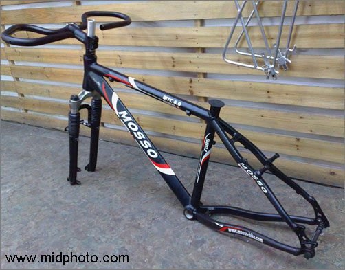
MOSSO MTC6.0车架，Manitou Six前叉和一个杂牌蝴蝶车把
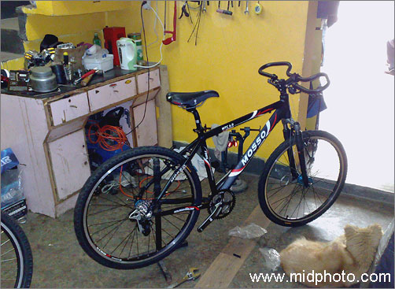
在作坊里 work in progress
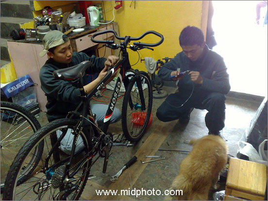
围城和为为两位认真工作的小师傅
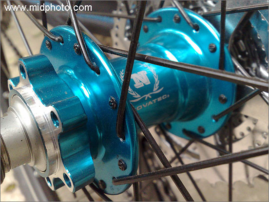
台湾产久裕四轴承花鼓NOVATEC—D041/042
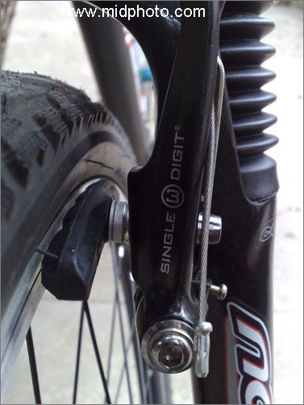
Avid Single Digit 3 V刹
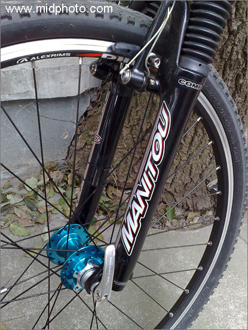
Manitou Six 前叉
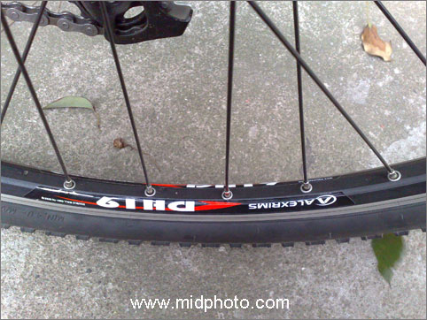
AlexRims DH19车圈
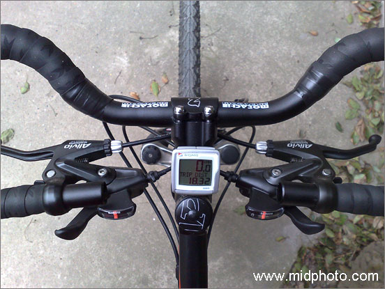
一般的蝴蝶把都是海绵套，一旦淋湿很难干。五毒让我扔掉海面套，缠上了公路车把胶。前后指拨是老款Alivio带连体刹车。码表是法国SIGMA
906。车胎抛弃了宽大的山地胎，选用了26x1.5的小齿胎，实践证明这个外胎跑柏油路很轻快。
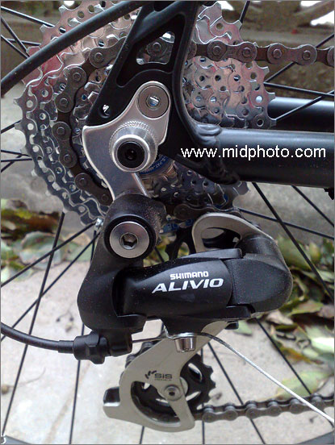
日本SHIMANO Alivio 后变速组件
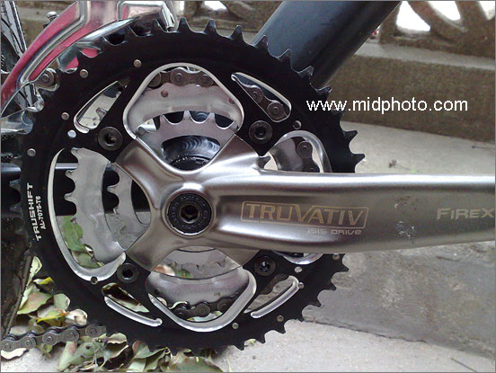
TRUVATIV Firex齿盘和中轴套装
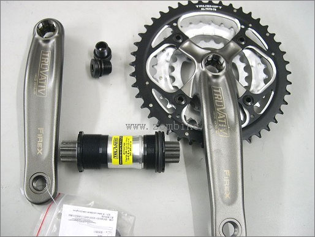
齿盘和中轴套装
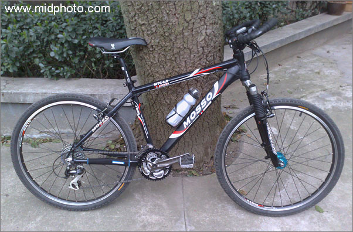
车装好了
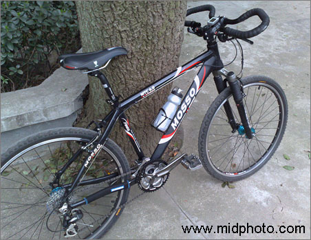
我的黑马
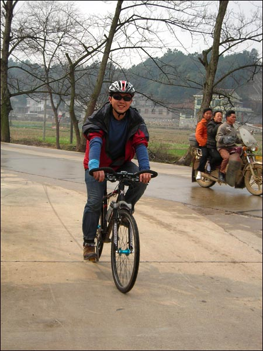
本人骑车的样子（围城同学拍摄)
|